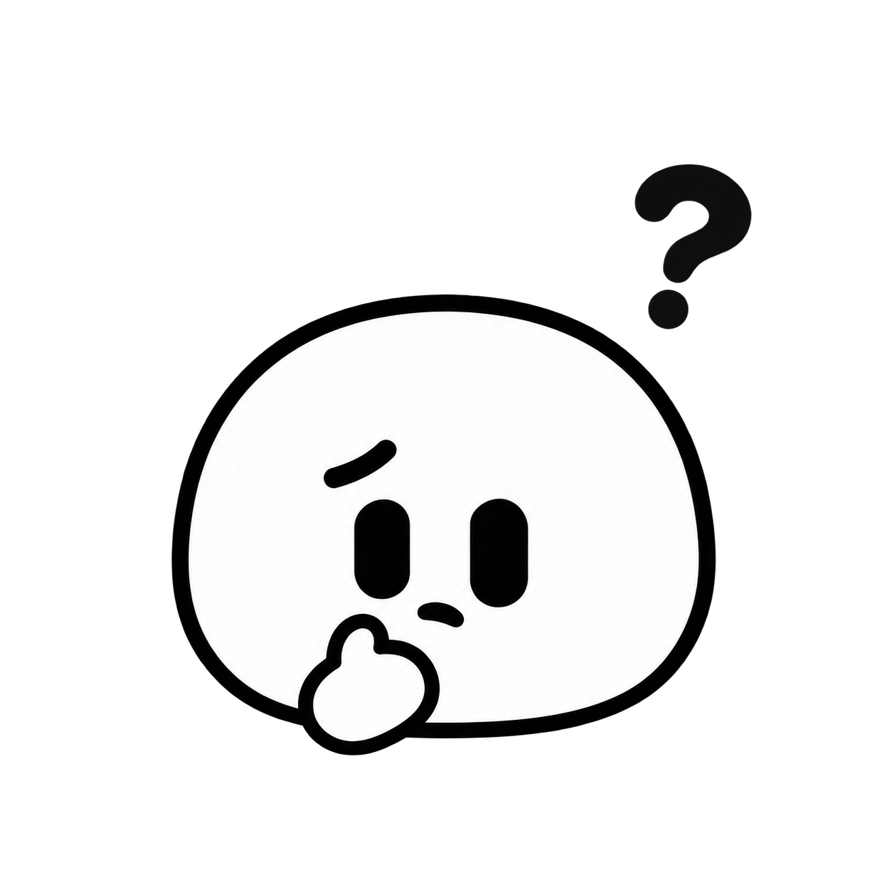
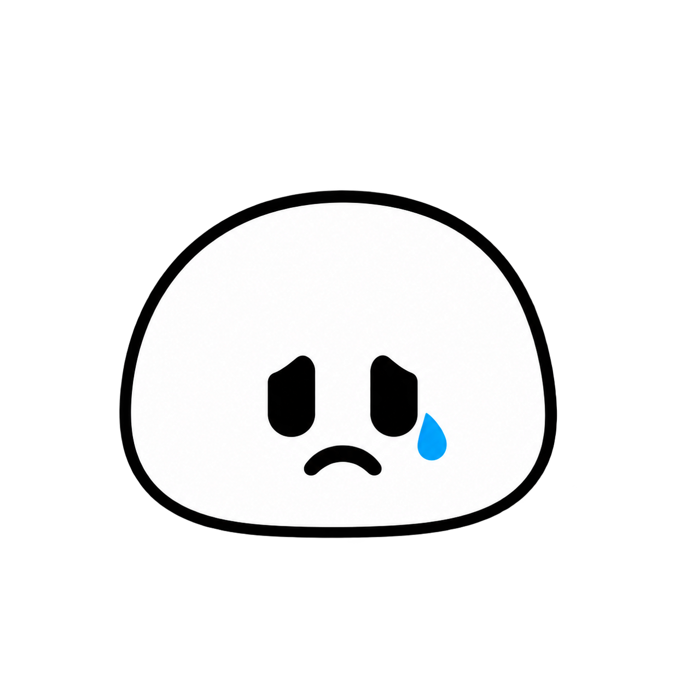

<!doctype html><html lang="fr"><meta charset="utf-8"><meta name="viewport" content="width=device-width, initial-scale=1"><title>Slime · Réactions</title><style>*{box-sizing:border-box}body{margin:0;padding:36px;background:#e5efeb;color:#244e57;font-family:system-ui,sans-serif}main{max-width:1000px;margin:auto}h1{margin-bottom:8px}p{color:#51747b}.grid{display:grid;grid-template-columns:repeat(3,1fr);gap:20px}figure{margin:0;background:#f6f8f3;border-radius:24px;padding:12px 12px 24px;text-align:center}img{width:100%;display:block}figcaption{font-weight:600}@media(max-width:600px){body{padding:20px}.grid{grid-template-columns:repeat(2,1fr);gap:12px}}</style><main><h1>Un slime, sept réactions.</h1><p>Série révisée · corps blanc · masques de recoloration à préparer</p><div class="grid"><figure><figcaption>Salut !</figcaption></figure><figure><figcaption>J’adore</figcaption></figure><figure><figcaption>Trop drôle</figcaption></figure><figure><figcaption>Waouh !</figcaption></figure><figure><figcaption>Je réfléchis…</figcaption></figure><figure><figcaption>Bravo !</figcaption></figure><figure><figcaption>Triste</figcaption></figure></div></main>